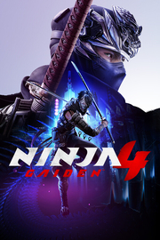

 |
|
| Tiempo de juego | No Jugado |
| Última actividad | Nunca |
| Añadido | 17/10/2025 2:18:10 |
| Modificado | 23/10/2025 20:42:11 |
| Estado de finalización | Not Played |
| Librería | Playnite |
| Fuente | 6TB STORE |
| Plataforma | PC (Windows) |
| Fecha de lanzamiento | 20/10/2025 |
| Puntuación de la Comunidad | |
| Puntuación de la Crítica | |
| Puntuación de usuario | |
| Género | Acción Aventura |
| Desarrollador | PlatinumGames Inc. / Team NINJA / KOEI TECMO GAMES CO., LTD. |
| Editor | Xbox Game Studios |
| Característica | Compat. Total Con Mando Cromos De Logros De Préstamo Familiar Un Jugador |
| Enlaces | Punto de encuentro Discusiones Guías Noticias Página de la tienda PCGamingWiki Logros |
| Tag | 3D Acción Acción y aventura Aventura Difíciles Hack and slash Juegos de acción de personajes Luchador espectacular Ninjas Sangriento Tercera persona Un jugador Violentos |
¡La mejor saga de aventuras de acción de ninjas regresa con NINJA GAIDEN 4! Embárcate en una sofisticada aventura, donde modernidad y tradición se entremezclan en un adrenalínico cóctel de estilo y combate desenfrenado.
La leyenda regresa
Vuelve el intenso y veloz sistema de combate que consolidó NINJA GAIDEN como una de las mejores sagas de acción. El sistema clásico renace y se renueva con un novedoso estilo de lo más emocionante para una nueva generación de jugadores.
Una evolución épica del género hack and slash
NINJA GAIDEN 4 combina la serena filosofía de combate de Team NINJA con la jugabilidad elegante y dinámica de PlatinumGames. Disfruta de un espectáculo visual inigualable y de un sistema de combate que recompensa la precisión y la estrategia. Usa el ninjutsu de vínculo de sangre para transformar tus armas y despedazar a tus enemigos, además de técnicas clásicas como Salto de Izuna o Golondrina voladora.
El legendario Ryu Hayabusa también regresa con un conjunto de habilidades rediseñado, pero a la vez familiar. Gracias a su experiencia de juego personalizable, NINJA GAIDEN 4 propondrá todo un desafío para los veteranos de los juegos de acción y los recién llegados podrán disfrutar de una trepidante aventura repleta de giros y sorpresas.
El regreso de un antiguo enemigo
En un futuro cercano, una lluvia de miasma cae incesantemente sobre Tokio tras la resurrección de un antiguo enemigo. El destino de la ciudad está en manos de Yakumo, un joven prodigio ninja que se abre camino a través de un ejército de soldados ninjas cibernéticos y criaturas sobrenaturales. Junto con el legendario Ryu Hayabusa, deberá hacer frente a la maldición ancestral que amenaza con destruir toda Tokio.